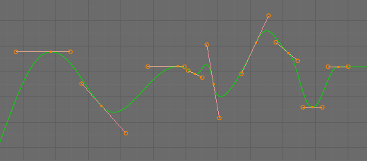
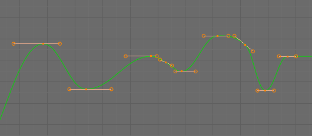
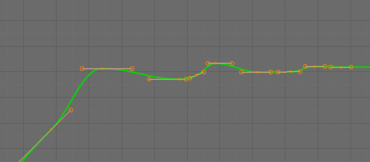
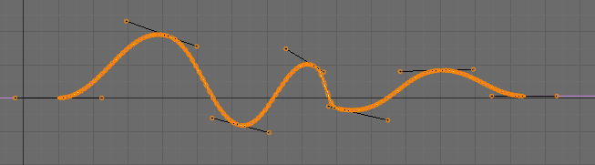

Editing¶
By default, when new channels are added, the Graph Editor sets them to Edit Mode.
Many of the hotkeys are the same as the 3D View ones, for example:
- G to move
- R to rotate
- S to scale
- B for box select/deselect
And of course you can lock the transformation along the X axis (time frame) or Y axis (value) by pressing X or Y during transformation.
For precise control of the keyframe position and value, you can set values in the Active Keyframe of the Sidebar region.
Insert Keyframe¶
Reference
| Hotkey: | Ctrl-LMB, Shift-Ctrl-LMB |
|---|
Ctrl-LMB inserts a keyframe to the active F-curve at the mouse position. The newly added keyframes will be selected, making it easier to quickly tweak the newly added keyframes. All previously selected keyframes are kept selected by using Shift-Ctrl-LMB.
Transform Snapping¶
When transforming keyframes with G, R, S, the transformation can be snapped to increments.
Snap Transformation to 1.0 Ctrl.
Divide Transformation by 10.0 Shift.
Snap¶
Reference
| Menu: | |
|---|---|
| Hotkey: | Shift-S |
Keyframes can be snapped to different properties by using the Snap Keys tool.
- Current Frame
- Snap the selected keyframes to the Playhead.
- Cursor Value
- Snap the selected keyframes to the 2D Cursor.
- Nearest Frame
- Snap the selected keyframes to their nearest frame individually.
- Nearest Second
- Snap the selected keyframes to their nearest second individually, based on the FPS of the scene.
- Nearest Marker
- Snap the selected keyframes to their nearest marker individually.
- Flatten Handles
Flatten the Bézier handles for the selected keyframes.
Flatten Handles snapping example.¶ 
Before Flatten Handles.

After Flatten Handles.
Mirror¶
Reference
| Menu: | |
|---|---|
| Hotkey: | Shift-M |
Selected keyframes can be mirrored over different properties using the Mirror Keys tool.
- By Times Over Current Frame
- Mirror horizontally over the Playhead.
- By Values over Cursor Value
- Mirror vertically over the 2D Cursor.
- By Times over Time 0
- Mirror horizontally over frame 0.
- By Values over Value 0
- Mirror vertically over value 0.
- By Times over First Selected Marker
- Mirror horizontally over the first selected Marker.
Clean Keyframes¶
Reference
| Menu: | |
|---|---|
| Hotkey: | X |
Clean Keyframes resets the keyframe tangents on selected keyframes to their auto-clamped shape, if they have been modified.

F-Curve before cleaning. |

F-Curve after cleaning. |
{kind=link}
{kind=link}
Clean Channels¶
Reference
| Menu: | |
|---|---|
| Hotkey: | X |
Acts like the Clean Keyframes tool but will also delete the channel itself if it is only left with a single keyframe containing the default property value and it’s not being used by any generative f-curve modifiers or drivers.
Note
The modified curve left after the Clean tool is run is not the same as the original, so this tool is better used before doing custom editing of f-curves and after initial keyframe insertion, to get rid of any unwanted keyframes inserted while doing mass keyframe insertion (by selecting all bones and pressing I for instance).
Smoothing¶
Reference
| Menu: | |
|---|---|
| Hotkey: | Alt-O |
There is also an option to smooth the selected curves, but beware: its algorithm seems to be to divide by two the distance between each keyframe and the average linear value of the curve, without any setting, which gives quite a strong smoothing! Note that the first and last keys seem to be never modified by this tool.

F-Curve after smoothing. |
{kind=link}
Sampling and Baking Keyframes¶
- Sample Keyframes Shift-O
Sampling a set of keyframes replaces interpolated values with a new keyframe for each frame.

F-Curve before sampling.
F-Curve after sampling.
- Bake Curves Alt-C
- Baking a curve replaces it with a set of sampled points, and removes the ability to edit the curve.
{kind=link}
Bake Sound to F-Curves¶
Reference
| Menu: |
|---|
The Bake Sound to F-Curves tool takes a sound file and uses its sound wave to create the animation data.
- Lowest frequency
- Cutoff frequency of a high-pass filter that is applied to the audio data.
- Highest frequency
- Cutoff frequency of a low-pass filter that is applied to the audio data.
- Attack time
- Value for the hull curve calculation that tells how fast the hull curve can rise. The lower the value the steeper it can rise.
- Release time
- Value for the hull curve calculation that tells how fast the hull curve can fall. The lower the value the steeper it can fall.
- Threshold
- Minimum amplitude value needed to influence the hull curve.
- Accumulate
- Only the positive differences of the hull curve amplitudes are summarized to produce the output.
- Additive
- The amplitudes of the hull curve are summarized. If Accumulate is enabled, both positive and negative differences are accumulated.
- Square
Gives the output as a square curve. Negative values always result in -1, and positive ones in 1.
- Square Threshold
- All values lower than this threshold result in 0.
Show/Hide¶
- Hide Selected Curves H
- Hides the selected curves.
- Hide Unselected Shift-H
- Show only the selected curve (and hide everything else).
- Reveal Curves Alt-H
- Show all previous hidden curves.